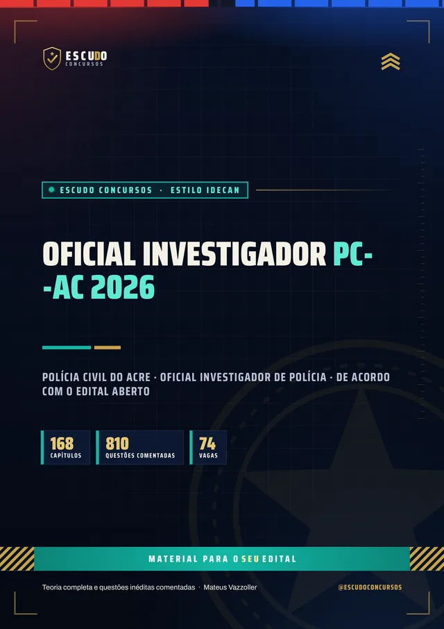
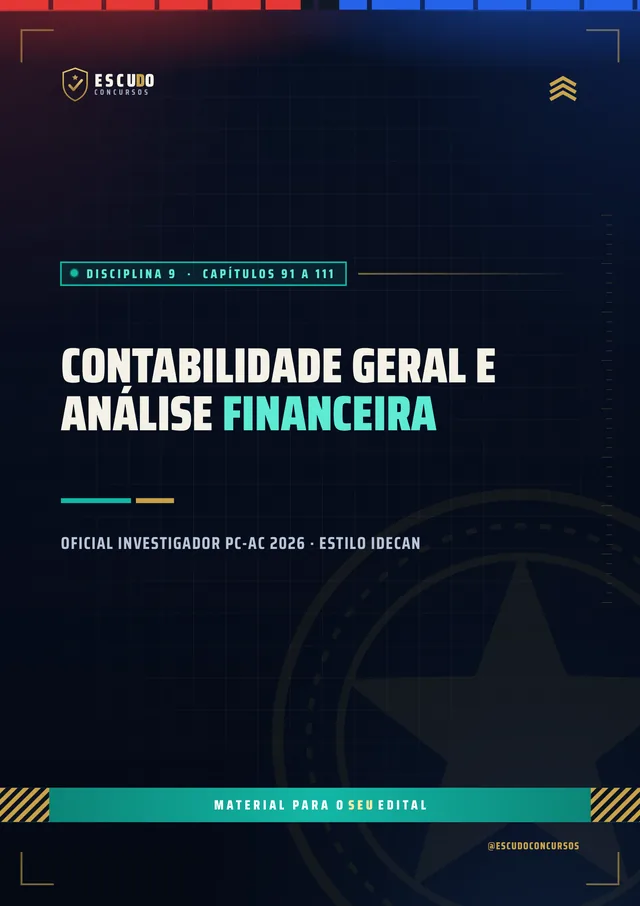
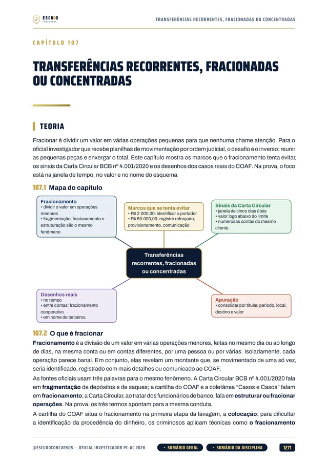
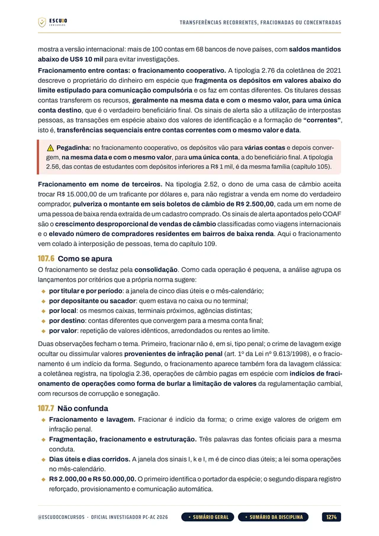
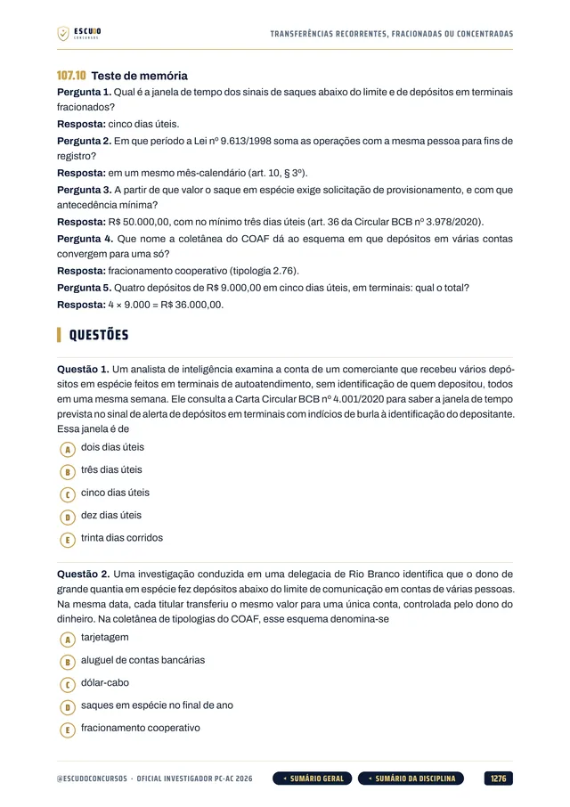
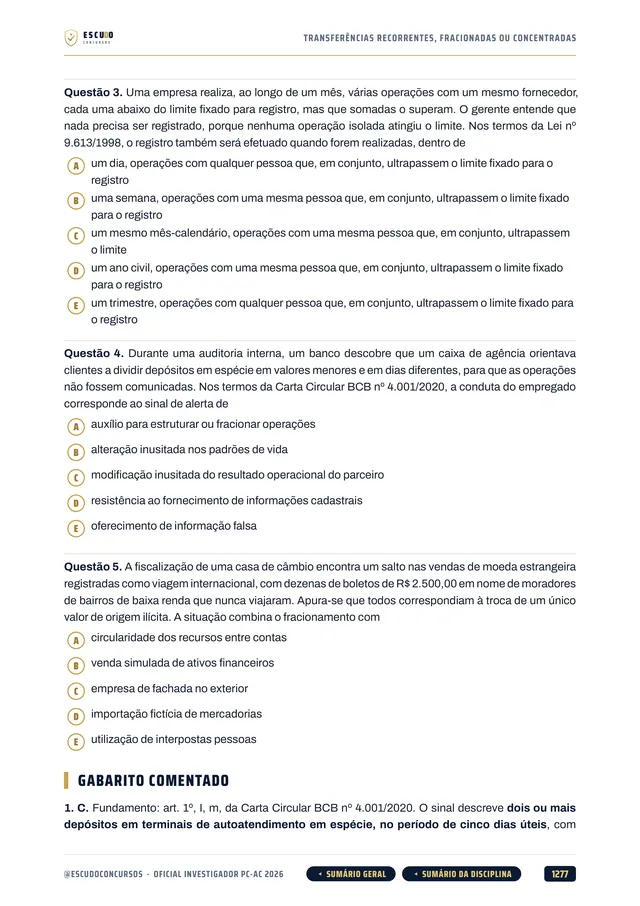

Simulado 1
No meio do caminho
Para medir onde você está e ajustar o estudo enquanto ainda dá tempo.
30 dias após a compra
Material independente, sem vínculo com a Polícia Civil do Estado do Acre, com a SEAD/AC ou com o IDECAN.


810questões
comentadas
ConcursoPC-AC2026 · Edital aberto
Briefing
Edital aberto: 74 vagas para Oficial Investigador de Polícia, prova em 24/01/2027. Curso feito de acordo com o edital aberto (Edital nº 001 SEAD/PCAC, banca IDECAN), item por item, com questões de 5 alternativas e gabarito comentado. Os Específicos valem 75% da nota, e o curso cobre todos.
de R$ 47 por 21% OFF
R$37
com o cupom PCAC37 até 14/12/2026. Pelo botão, o cupom já vai preenchido.
R$47
Curso completo, com acesso imediato.
Terreno
O concurso
A Polícia Civil do Acre abriu 74 vagas imediatas de Oficial Investigador de Polícia, mais cadastro reserva, com remuneração de R$ 6.342,07. O Edital nº 001 SEAD/PCAC foi publicado no DOE/AC de 06/11/2026 e a banca é o IDECAN. As inscrições vão de 11/11 a 14/12/2026 e a prova objetiva e discursiva é no domingo, 24/01/2027, das 7h às 12h (horário do Acre).
O curso foi feito de acordo com o edital aberto, item por item do Anexo III. Os Conhecimentos Específicos valem 120 dos 160 pontos da prova objetiva: 75% da nota.
| Disciplina | Questões | Capítulos |
|---|---|---|
| Língua Portuguesa (Básicos) | 6 | 12 |
| Raciocínio Lógico (Básicos) | 6 | 10 |
| Noções de Informática (Básicos) | 8 | 10 |
| Realidade do Acre (Básicos) | 4 | 7 |
| Direito Constitucional, com a Constituição do Acre (Jurídicos) | 3 | 8 |
| Direito Administrativo (Jurídicos) | 3 | 8 |
| Direito Penal e Processual Penal (Jurídicos) | 6 | 23 |
| Legislação Institucional, com a legislação do Acre (Jurídicos) | 4 | 11 |
| Conhecimentos Específicos (peso 2, 120 pontos) | 60 | 73 |
| Contabilidade Geral e Análise Financeira | no bloco | 21 |
| Estatística | no bloco | 13 |
| Arquivologia | no bloco | 9 |
| TI e Segurança da Informação | no bloco | 14 |
| Análise de Dados e Informações | no bloco | 9 |
| Noções de Administração | no bloco | 7 |
| Prova discursiva (40 pontos) | 1 redação | 5 |
| Mais o capítulo 001, sobre como é a prova e como usar o curso. | 100 | 168 |
Protocolo
O formato
Você estuda lendo, no seu ritmo, pela área de membros da Hotmart ou com os arquivos baixados. O curso foi feito de acordo com o edital aberto (Edital nº 001 SEAD/PCAC), disciplina por disciplina, com a legislação federal e as leis do Acre conferidas no texto oficial vigente em 06/11/2026, data de publicação do edital.
Reconhecimento
Páginas reais do PDF
Toque numa página para ver em tamanho maior.





100% em PDF · Garantia de 7 dias · Pagamento pela Hotmart
Equipamento
O que você recebe
Curso em PDF organizado em módulos pelas disciplinas da prova, com 1.825 páginas no padrão visual ESCUDO, para ler no computador, no tablet, no celular ou no app da Hotmart. Não há videoaulas.
168 capítulos de acordo com o edital aberto: Língua Portuguesa, Raciocínio Lógico, Informática, Realidade do Acre, Direito Constitucional, Administrativo, Penal e Processual Penal, Legislação Institucional e os Conhecimentos Específicos.
810 questões inéditas com 5 alternativas, de (A) a (E), no estilo do IDECAN, todas com gabarito comentado: por que a correta está correta e onde erra cada uma das outras quatro.
Os Específicos, que valem 75% da nota, em 73 capítulos: contabilidade e análise financeira (extratos, PIX e TED, movimentações atípicas), estatística, arquivologia, TI e segurança da informação, análise de dados (vínculos, registros de comunicação, análise geográfica) e administração.
A legislação do Acre: Constituição do Estado (segurança pública e Polícia Civil), LC 129/2004 (Lei Orgânica da PCAC), LC 496/2025 (cargo de Oficial Investigador), Lei 2.250/2009 (PCCR) e LC 39/1993 (Estatuto dos Servidores), mais a Realidade do Acre em 7 capítulos.
Prova discursiva em 5 capítulos: texto de 20 a 30 linhas sobre conhecimentos da carreira, os critérios de correção (aspecto formal, textual e técnico) e propostas comentadas.
Teoria com recursos para memorizar: mapa de cada capítulo, quadros "Não confunda", questão comentada, revisão relâmpago e teste de memória.
Navegação clicável: do sumário você vai direto à disciplina e ao capítulo, e volta pelos botões do rodapé.
2 simulados inéditos de 100 questões de 5 alternativas, com prova discursiva e padrão de correção, mais caderno de comentários. O Simulado 1 vem aos 30 dias e o Simulado 2 aos 60 dias após a compra.
Plano de ação
Área de membros
| Módulo | Conteúdo | Liberação |
|---|---|---|
| M0 Comece aqui | Apresentação + capítulo 001 (como é a prova e como usar o curso). Bônus: PDF completo para baixar e imprimir | Na compra; o PDF completo no 8º dia |
| M1 Língua Portuguesa | Capítulos 002 a 013 | Na compra |
| M2 Raciocínio Lógico | Capítulos 014 a 023 | Na compra |
| M3 Noções de Informática | Capítulos 024 a 033 | Na compra |
| M4 Realidade do Acre | Capítulos 034 a 040 | Na compra |
| M5 Direito Constitucional | Capítulos 041 a 048 | Na compra |
| M6 Direito Administrativo | Capítulos 049 a 056 | Na compra |
| M7 Direito Penal e Processual Penal | Capítulos 057 a 079 | Na compra |
| M8 Legislação Institucional | Capítulos 080 a 090 | Na compra |
| M9 Contabilidade e Análise Financeira | Capítulos 091 a 111 | Na compra |
| M10 Estatística | Capítulos 112 a 124 | Na compra |
| M11 Arquivologia | Capítulos 125 a 133 | Na compra |
| M12 TI e Segurança da Informação | Capítulos 134 a 147 | Na compra |
| M13 Análise de Dados e Informações | Capítulos 148 a 156 | Na compra |
| M14 Noções de Administração | Capítulos 157 a 163 | Na compra |
| M15 Prova Discursiva | Capítulos 164 a 168 | Na compra |
| M16 Simulado 1 | 100 questões, prova discursiva e caderno de comentários | 30 dias após a compra |
| M17 Simulado 2 | 100 questões, prova discursiva e caderno de comentários | 60 dias após a compra |
Treinamento
Treino no formato da prova
Cada simulado tem 100 questões de 5 alternativas na distribuição do edital (40 de Básicos e Jurídicos e 60 de Específicos), mais uma prova discursiva de 20 a 30 linhas com padrão de correção e caderno de comentários.
Simulado 1
Para medir onde você está e ajustar o estudo enquanto ainda dá tempo.
30 dias após a compra
Simulado 2
Cobre o programa inteiro de novo, para o seu teste final.
60 dias após a compra
Perfil
Para quem é
Para quem vai prestar Oficial Investigador da PC-AC e quer estudar pelo programa do edital aberto, com foco nos Específicos que valem 75% da nota e sem perder tempo com assunto que não cai.
Proteção
Você tem 7 dias de garantia pela Hotmart. Se não for o que você esperava, pede o reembolso pela própria Hotmart, dentro do prazo.
Cronograma
Sem surpresa na área de membros
Na compra: todas as disciplinas em PDF, uma por módulo, com a teoria e as questões comentadas. É o curso inteiro, para começar a estudar no mesmo dia.
8 dias após a compra: o PDF completo para imprimir. É o mesmo conteúdo dos módulos num arquivo só, liberado depois da garantia de 7 dias.
Simulado 1: 30 dias após a compra, para medir onde você está no meio da preparação.
Simulado 2: em 17/01/2027, 7 dias antes da prova, para o último teste.
O PDF completo e os simulados aparecem bloqueados na área de membros até a data de cada um: não é conteúdo faltando, é a liberação programada.
Instrução
Dúvidas
Não. É um curso 100% em PDF: teoria, questões comentadas e simulados para ler e resolver.
O acesso é imediato depois da confirmação do pagamento, pela área de membros da Hotmart (web ou app). O PDF completo para baixar e imprimir é liberado no 8º dia.
O Simulado 1 é liberado 30 dias após a compra e o Simulado 2, 60 dias após a compra.
O Edital nº 001 SEAD/PCAC, publicado no DOE/AC de 06/11/2026, para Oficial Investigador de Polícia, com banca IDECAN. O curso foi feito de acordo com o edital aberto, item por item do Anexo III. Se houver retificação do edital, o curso é conferido e ajustado.
No domingo, 24/01/2027, das 7h às 12h, horário do Acre, com prova objetiva e discursiva. As inscrições vão de 11/11 a 14/12/2026, e a taxa é de R$ 105,00. Confirme sempre as datas no edital e no site do IDECAN.
Sim. O curso traz a Constituição do Estado do Acre (segurança pública e Polícia Civil), a LC 129/2004 (Lei Orgânica da PCAC), a LC 496/2025 (cargo de Oficial Investigador), a Lei 2.250/2009 (PCCR), a LC 39/1993 (Estatuto dos Servidores) e a Realidade do Acre em 7 capítulos, além da Lei 14.735/2023 (Lei Orgânica Nacional das Polícias Civis).
Não. A prova objetiva tem 100 questões de múltipla escolha com cinco alternativas, de (A) a (E), e uma só correta, mais uma prova discursiva de 20 a 30 linhas. O curso segue esse formato.
Sim. São 60 questões de peso 2, ou seja, 120 dos 160 pontos da prova objetiva (75%). Por isso 73 dos 168 capítulos do curso são dos Específicos.
Não. As 810 questões de treino e as dos simulados são inéditas, escritas a partir do programa do edital aberto.
Você tem 7 dias de garantia pela Hotmart. Se não for o que você esperava, pede o reembolso.
Missão
PC-AC 2026
de R$ 47 por 21% OFF
R$37
com o cupom PCAC37 até 14/12/2026.
R$47
Curso completo, com acesso imediato.
Material para o SEU edital. ESCUDO Concursos.
Continue estudando